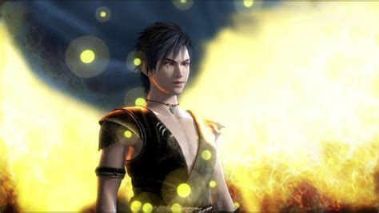
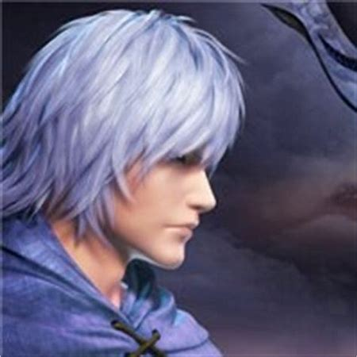
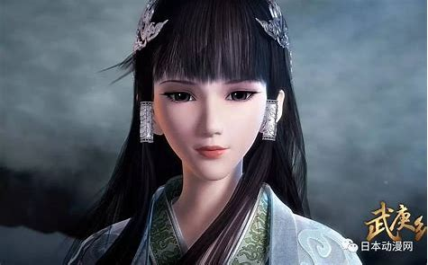

|  |  |
武庚纪这是发生于上古时代的故事……彼时，世上诞生出能够驾驭天地之力的云族。云族力量之在，其他族类皆屈服于这股力量之下。然而，在众多人都依附于云族而生的同时却有一位特立独行、与众不同的王者选择了一条不一样的路——以凡人的身份向压倒性的力量挑战！他到底是谁呢？ 没错，他正是人族之王辛王。然而，辛王空有一腔勇气与热血，却最终难敌可云族之王帝天而英勇战死。危机关头，王妃以性命为代价，保护王子武庚逃避了云族追杀。王子武庚一边逃亡一边悲愤，时刻不忘父亲志愿与仇恨，从此立誓——有朝一日，必定反制云族，为父报仇。 重新整顿之后，武庚在神隐部大祭司伏夕的帮助下，成功联合了冥族、白国缔结同盟，共伐云族。带着敢死敢作为的勇气，他们再度向云族发起了挑战。然而，他们却不知这一切战争其实都只是有心之人事先就策划好的——伏夕自己欲望的阴谋和牺牲品。 警醒之时却也是死亡将至。危机关头，武庚的爱人白菜毅然挺身而出，以牺牲自己为代价保全和帮助了武庚，击败了伏夕…… |
|
|  |